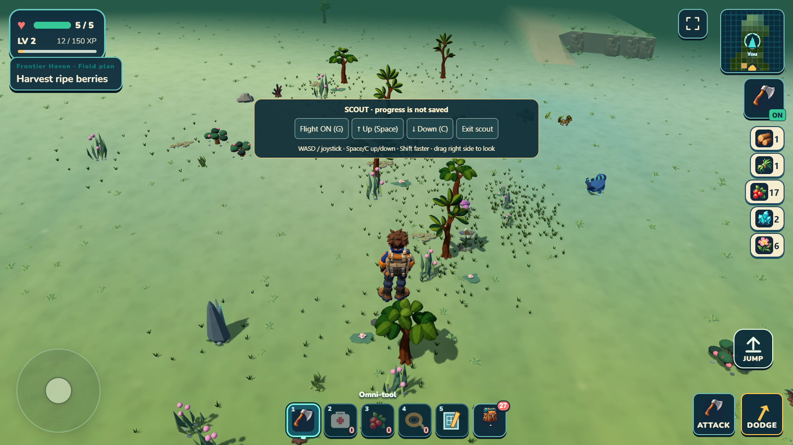
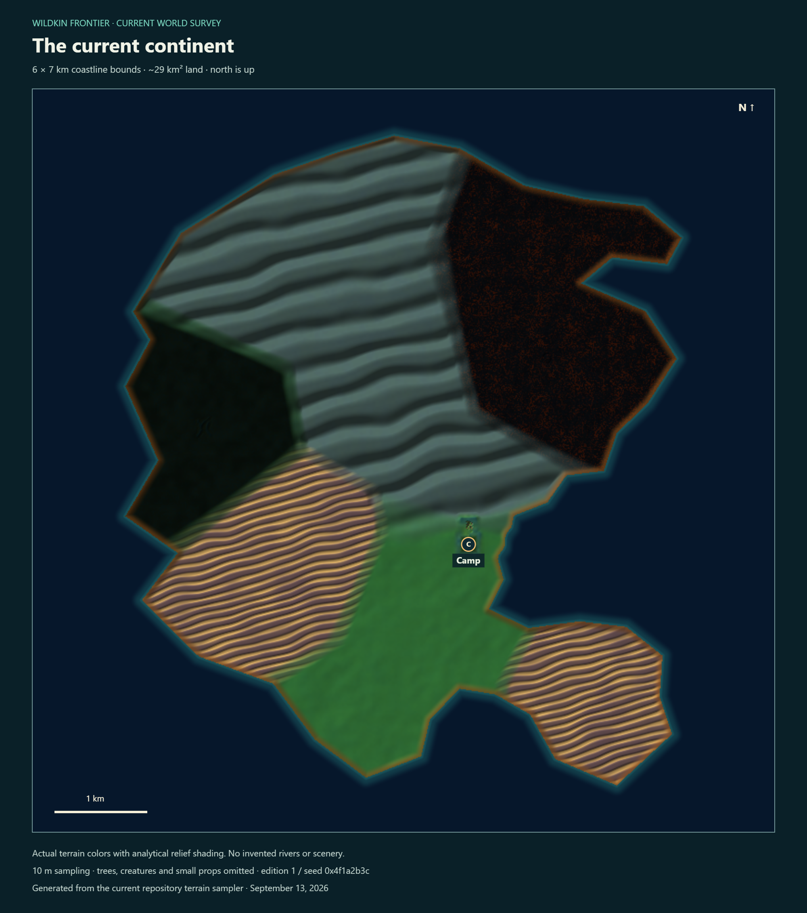
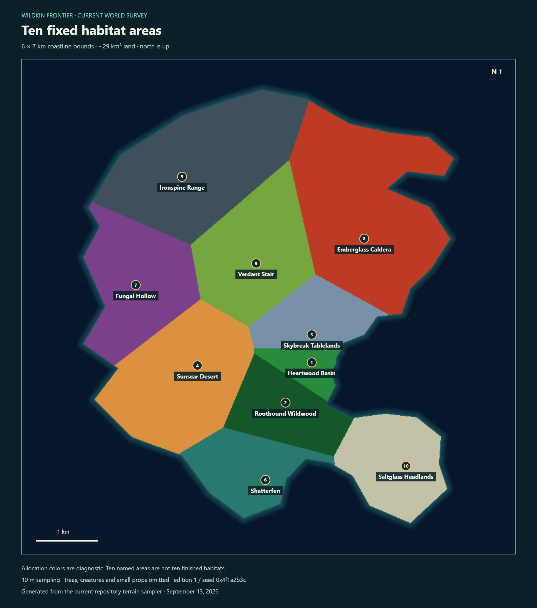
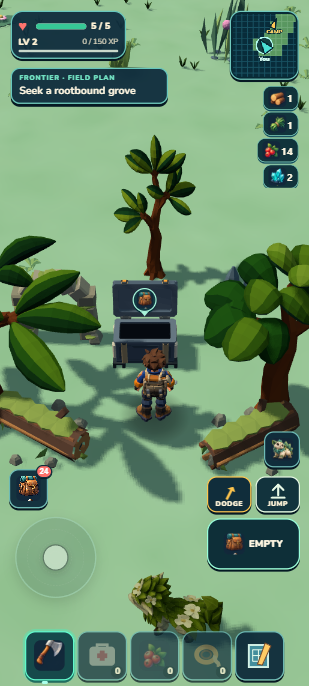
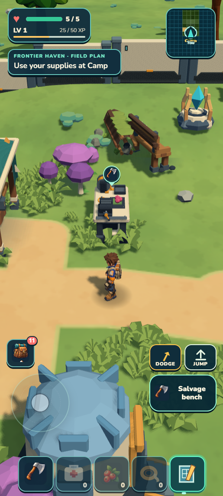
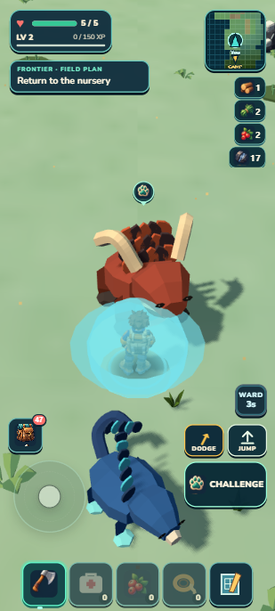
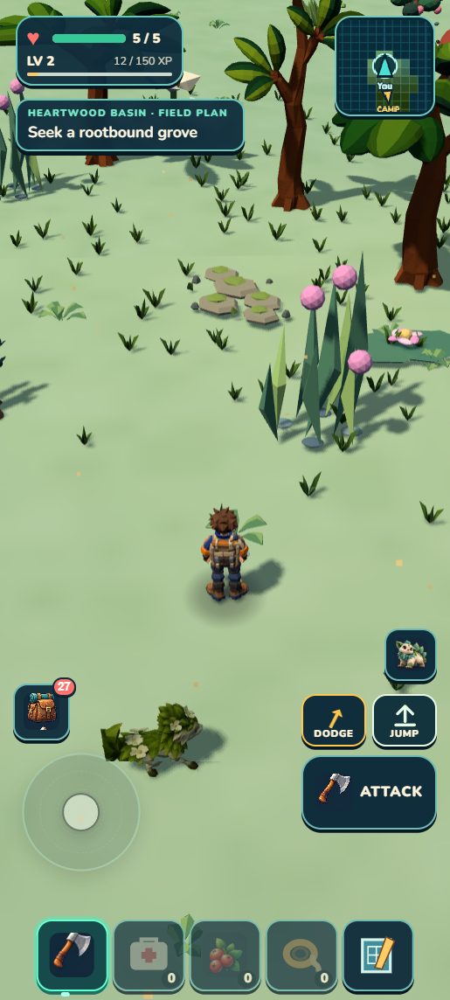
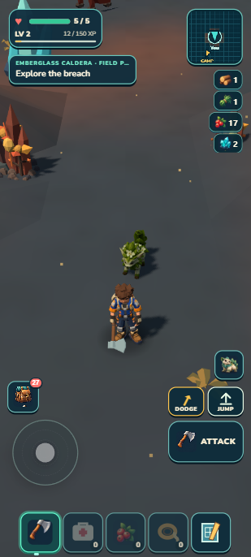
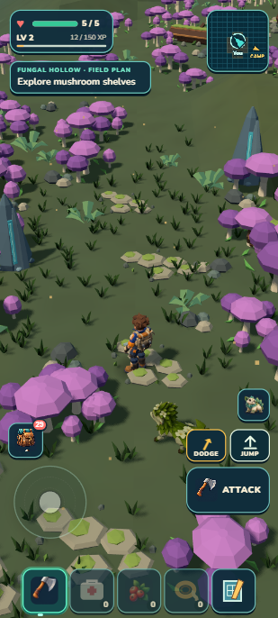

6 × 7 kmIrregular coastline · about 29 km² land
10 named areasFixed allocations; habitat production remains incomplete
1,411 testsPassing with package checks; this is still a development build
01 · inspect it yourself
Creative-style flight through the real game

Native game capture. The same character, scenery, wildlife and streaming owners run in Scout. Nearby objects render normally; the whole continent is not loaded at once.WASD / joystickMove horizontally
Space / CRise / descend
ShiftMove faster
G / FlightFly or walk
Right-side dragLook around
Exit scoutReturn to your save
Scout is protected from damage, even when walking. It starts from your regular progress, then keeps changes temporary. Exit or reload discards Scout progress.
02 · the continent
One irregular landmass, ten distinct destinations to build

Actual sampled terrain, with analytical slope shading. The regular ridges reveal current terrain limitations.
Habitat allocation colors. Several areas still use placeholder terrain/content; this is not a completion map.These are full-continent 10 m surveys, not stitched screenshots. Trees, creatures and small props are omitted. Scout shows those in the actual game. Current sampled relief peaks near 78 m; extreme mountain and plateau country still needs work.
03 · player journeys
Exploration leads. Collecting and building help it.
PrepareCamp, food, useful gearExploreTerrain, threats, discoveriesChooseGather, bond or push onwardReturnBuild, grow and improve

An earned Mossling trip now leads from Camp to a living grove reward and back to a useful garden.
A builder can gather, return, place a Salvage bench and craft a trail ration without capturing a Wildkin.
Mossling utility, Emberhorn mineral strikes and Tidefin protection give companions practical field roles.04 · places becoming playable
More woodland, volcanic ground and fungal hollows

Seven more solid trees and 21 low plants along the first circuit. Trunks, berries and the return were physically tested.
Caldera adds a mineral outing and avoidable danger. Its current art remains on hold.
Fungal Hollow adds branching banks, finite flowers and a predator. The relief still reads too flat.Signal Cache, seeded crystal blooms and living groves add discoveries. Saved opening/depletion and useful rewards matter as much as the scenery. Surface swimming and the ocean boundary are present.
05 · honest remaining gaps
The foundation is broader than the finished experience
World
Ten finished habitats
The map has ten connected allocations. Ironspine, Shatterfen, Verdant Stair and Saltglass still need distinct local experiences. Large areas remain too regular or sparse.
Creatures & Camp
Deeper variety
Roughly 30 species, broad modular breeding and genetics, richer habitats and physical factory logistics remain staged. Current useful roles are a foundation.
Feel & performance
Natural, full, smooth
Scenery preparation reduced measured crossing work, but whole-frame hitches remain. No physical-phone performance or ready-alpha claim is made.
06 · workflow review
Keep the useful proof. Make the batches count.
| Keep | Improve if resumed |
|---|
| Real input, visible collision and full-save parity | Accept one complete player journey, not a pile of disconnected changes |
| Independent workers with clear file ownership | Consolidate one review packet and one frozen-source package gate |
| Native visual blockouts before production | Reject generated targets that require unavailable assets or materials |
| Three visual rounds as a ceiling | Address ground cover, light and landform together when small scale changes stop helping |
The long thread reached its agent-thread limit during the final Scout slice, so that feature has root review and native/package proof, not an independent review. Earlier Heartwood source and visual reviews were independent. No shared workflow skill was silently rewritten.
Work is stopped for Chris's requested PC restart and workflow review. Further ground-cover/lighting studies and an Ironspine journey are proposals only.